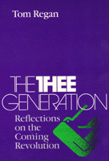

Arguing that the expansive ethic of service is replacing the suffocating ethic of greed
Arguing that the expansive ethic of service is replacing the suffocating ethic of greed


 Arguing that the expansive ethic of service is replacing the suffocating ethic of greed
Arguing that the expansive ethic of service is replacing the suffocating ethic of greed

|  |
The Thee GenerationReflections on the Coming RevolutionTom Reganpaper EAN: 978-0-87722-772-4 (ISBN: 0-87722-772-1) |
"We must be immensely grateful to Tom Regan for the work he has done in defense of all those wonderful companions that surround us in the natural world. In the process, he has done much to save us from those dark and deadly forces that dwell within the human frame. Our compassion must be a comprehensive concern for the world of the living or it will not be at all."
—Thomas Berry, author of The Dream of the World
The revolution examined in this collection of essays is a revolution of the human spirit. In this revolution, Tom Regan passionately contends that the expansive ethic of service is replacing the suffocating ethic of greed. Unlike previous generations, "The Thee Generation" asks, "What do I have to give?" rather than "What can I get to Keep?" Regan defines "Thee" as those to be served: the handicapped, the poor, the illiterate, the homeless, the starving and the abused, those newly born, and those soon to die. This generation is generous enough to include the animal kingdom, and even the earth itself, for the world of "The Thee Generation" is a place where a shared sense of community replaces the void of individual estrangement.
Each of these provocative, readable essays, most of which have not been previously published, offers answers to important moral questions and attempts to identify the right reasons for those answers. Regan addresses such topics as child pornography, feminism, deep ecology, vivisection, Christian theology, and career choice. The questions he raises force us to consider the boundaries of the moral community, and what it means to be human in our own generation: "The human is but one life form among many, and what distinguishes us from the larger community of life is not our power to subdue but our responsibility to protect."
"Building on feminist theory, The Thee Generation ambitiously challenges progressive feminist philosophy to acknowledge animals' moral standing, while demonstrating how patriarchal moral theories have concealed the legitimacy of caring as part of a full moral life. Indispensable reading in an era of disposable philosophies."
—Carol J. Adams, author of The Sexual Politics of Meat
"Tom Regan is one of our ablest contemporary philosophers working to expand our moral sensitivities beyond other humans toward a larger respect for the community of life on Earth in its myriad forms. In The Thee Generation he continues this argument with insight and with power.... Here is ethics in theory and in practice, facing the future and seeking truth that will reform the world."
—Holmes Rolson, III, Colorado State University and author of Environmental Ethics
"In these eloquent essays Tom Regan's message is that life on earth will have a future only if we become The Thee Generation. Regan envisions a revolution won, not by arrogance, guns and missiles, but with humility and a concern for all. His essays embody a theory informed by a life of practice."
—Laurence Thomas, Professor of Philosophy and Political Science Affiliate, Syracuse University, and author of Living Morally
"Tom Regan is one of the Few contemporary philosophers about whom it can be said that today many people think differently, and live differently, because of his work."
—James Rachels, Professor of Philosophy, University of Alabama, and author of The Elements of Moral Philosophy
"Regan presents an intellectual challenge to moral philosophers through his appraisal of a wide range of ethical theories.... His incisive critiques of such practices as sport hunting, animal experimentation, and animal agriculture offer a moral challenge to us all."
—Alison M. Jagger, Professor of Philosophy and Professor of Women's Studies, University of Colorado at Boulder
Preface
1. The Thee Generation
2. Living as if Life Matters
3. Ill-Gotten Gains
4. Why Child Pornography Is Wrong
5. Feminism and Vivisection
6. Abolishing Animal Agriculture
7. Irreconcilable Differences
8. Christians Are What Christians Eat
Notes and Readings
Index
Tom Regan, Professor of Philosophy at North Carolina State University, has published numerous books including Bloomsbury's Prophet (Temple) and The Case for Animal Rights.
General Interest
Philosophy and Ethics
© 2015 Temple University. All Rights Reserved. This page: http://www.temple.edu/tempress/titles/793_reg.html.